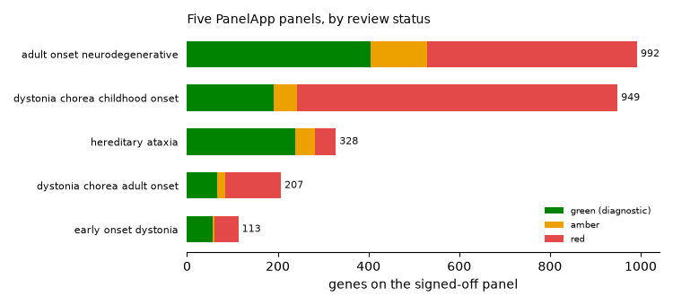
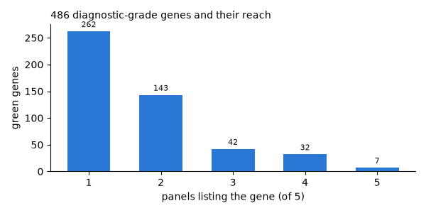
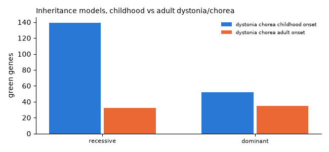

Note
Go to the end to download the full example code.
The genetic landscape of movement disorders#
Five signed-off Genomics England PanelApp panels sit in the bio lane as machine-readable TSVs: dystonia/chorea (adult and childhood onset), early-onset dystonia, hereditary ataxia, and adult-onset neurodegenerative disease. Together they define the review-grade gene vocabulary a movement atlas can anchor genetic labels to.
import glob
import os
import re
import matplotlib.pyplot as plt
import numpy as np
import pandas as pd
from moveatlas.store import LocalStore
GREEN, AMBER, RED = "#008300", "#eda100", "#e34948"
INK, INK2 = "#0b0b0b", "#52514e"
raw = LocalStore().path("datasets/bio/panelapp/raw")
panels = {}
for path in sorted(glob.glob(os.path.join(raw, "*.tsv"))):
name = re.sub(r"panel_\d+_", "",
os.path.basename(path)[:-4]).replace("_", " ")
df = pd.read_csv(path, sep="\t", low_memory=False)
panels[name] = df[df["Entity type"] == "gene"].copy()
for name, df in panels.items():
print(f"{name}: {len(df)} genes")
adult onset neurodegenerative: 992 genes
early onset dystonia: 113 genes
hereditary ataxia: 328 genes
dystonia chorea adult onset: 207 genes
dystonia chorea childhood onset: 949 genes
Review status per panel. PanelApp rates every gene green (diagnostic grade), amber (borderline) or red (insufficient evidence); the GEL_Status column carries the rating.
order = sorted(panels, key=lambda n: -len(panels[n]))
fig, ax = plt.subplots(figsize=(7.5, 3.4))
y = np.arange(len(order))[::-1]
left = np.zeros(len(order))
for status, color, label in ((3, GREEN, "green (diagnostic)"),
(2, AMBER, "amber"), (1, RED, "red")):
vals = np.array([(panels[n]["GEL_Status"] >= 3).sum() if status == 3
else (panels[n]["GEL_Status"] == status).sum()
for n in order], dtype=float)
ax.barh(y, vals, left=left, height=0.6, color=color, label=label,
zorder=3)
left += vals
ax.set_yticks(y)
ax.set_yticklabels(order, fontsize=8)
for yy, n in zip(y, order):
ax.text(left[list(order).index(n)] + 8, yy, str(len(panels[n])),
va="center", fontsize=8, color=INK)
ax.set_xlabel("genes on the signed-off panel")
ax.legend(fontsize=7.5, frameon=False, loc="lower right")
ax.spines[["top", "right", "left"]].set_visible(False)
ax.tick_params(left=False)
ax.set_title("Five PanelApp panels, by review status", loc="left",
fontsize=10)
fig.tight_layout()

How specific is each gene? Count, for every diagnostic-grade (green) gene, how many of the five panels list it: most genes belong to one clinical picture, but a pleiotropic core crosses several.
green = {n: set(df.loc[df["GEL_Status"] >= 3, "Gene Symbol"])
for n, df in panels.items()}
allgreen = sorted(set().union(*green.values()))
counts = pd.Series({g: sum(g in s for s in green.values())
for g in allgreen})
dist = counts.value_counts().sort_index()
fig, ax = plt.subplots(figsize=(6.0, 3.0))
ax.bar(dist.index, dist.values, width=0.6, color="#2a78d6", zorder=3)
for x, v in dist.items():
ax.text(x, v + 8, str(v), ha="center", fontsize=8, color=INK)
ax.set_xlabel("panels listing the gene (of 5)")
ax.set_ylabel("green genes")
ax.set_xticks(dist.index.tolist())
ax.spines[["top", "right"]].set_visible(False)
ax.set_title(f"{len(allgreen)} diagnostic-grade genes and their reach",
loc="left", fontsize=10)
fig.tight_layout()
core = counts[counts >= 3].sort_values(ascending=False)
print(f"pleiotropic core: {len(core)} genes on 3+ panels; on all five:",
", ".join(core[core == 5].index))

pleiotropic core: 81 genes on 3+ panels; on all five: SLC2A1, TUBB4A, APTX, ATM, ATP1A3, PLA2G6, PRRT2
Inheritance, where the panels declare it: the childhood and adult dystonia/chorea panels split differently between dominant, recessive and X-linked models.
pair = ["dystonia chorea childhood onset", "dystonia chorea adult onset"]
def moi_class(s):
s = str(s).upper()
if "BIALLELIC" in s:
return "recessive"
if "MONOALLELIC" in s or "DOMINANT" in s:
return "dominant"
if "X-LINKED" in s or "X LINKED" in s:
return "X-linked"
if "MITOCHONDR" in s:
return "mitochondrial"
return "other / not set"
rows = {}
for n in pair:
df = panels[n]
rows[n] = (df.loc[df["GEL_Status"] >= 3, "Model_Of_Inheritance"]
.map(moi_class).value_counts())
moi = pd.DataFrame(rows).fillna(0).astype(int)
moi = moi.loc[moi.sum(axis=1).sort_values(ascending=False).index]
fig, ax = plt.subplots(figsize=(6.5, 3.0))
x = np.arange(len(moi))
for i, (n, color) in enumerate(zip(pair, ("#2a78d6", "#eb6834"))):
ax.bar(x + (i - 0.5) * 0.36, moi[n], width=0.34, color=color,
label=n, zorder=3)
ax.set_xticks(x)
ax.set_xticklabels(moi.index, fontsize=8)
ax.set_ylabel("green genes")
ax.legend(fontsize=7.5, frameon=False)
ax.spines[["top", "right"]].set_visible(False)
ax.set_title("Inheritance models, childhood vs adult dystonia/chorea",
loc="left", fontsize=10)
fig.tight_layout()

Total running time of the script: (0 minutes 0.181 seconds)